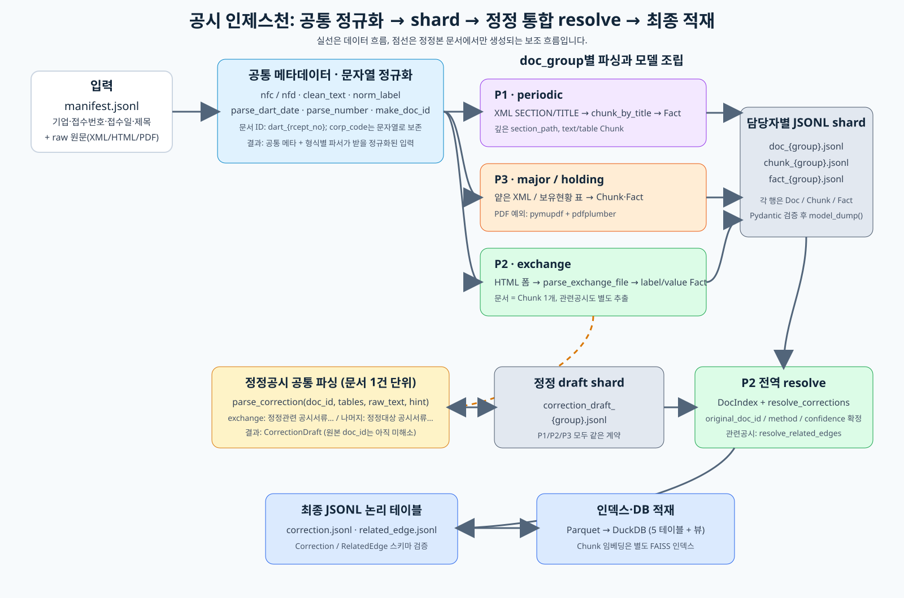

공시 Agent · Dartrio
DART 전자공시 원문을 근거로 인용하며 답하는 재무공시 RAG 에이전트
- 재무공시 질의응답의 진짜 난점은 검색이 아니라 신뢰였습니다. 거래소공시의 43%가 나중에 정정되고, 계산형 질의의 환각률이 28.4%로 가장 높았습니다.
- 정정 이력을 버전으로 관리하고, 계산은 LLM이 아니라 코드가 실행하게 분리했으며, 확인이 불가능한 경우를 별도 상태로 고지했습니다.
- 상장사 70곳의 공시 4,204건을 단일 인덱스로 질의하면서, LLM 호출은 6단계 중 두 지점으로 제한했습니다.


문제 🤔
데이터를 실제로 세어 보니 어려움이 세 갈래였습니다. ① 거래소공시의 43%가 나중에 정정되고, ② 그 정정의 43%는 원본이 수집 기간 밖이라 아예 없으며, ③ 계산형 질의는 6개 타입 중 환각률이 가장 높았습니다(28.4%).
접근 🛠
- 정정공시를
버전 엣지로 모델링해 '정정 전 / 정정 후'를 구분해 답하도록 했습니다. - 원본이 수집 범위 밖인 경우를
out_of_corpus_window상태로 분리해 확인 불가로 정직하게 고지했습니다. - 계산은 LLM에게 맡기지 않고 DSL 프로그램을 만들어 코드가 실행하도록 분리했습니다.
- 이벤트 생애주기("체결한 계약 중 이후 해지된 것")는 DART의
※ 관련공시필드를 엣지로 파싱해 조인 한 번으로 해결했습니다. 문서의 99%에 존재하는 필드였습니다. - additive-only 규약과 검증 스크립트로 각자 shard를 검증해 병합 사고를 0으로 수렴시켰습니다.
결과 📈
상장사 70곳의 공시 4,204건을 단일 인덱스로 질의할 수 있게 했고, 정정 이력과 확인 불가 상태를 구분해 답하는 구조를 만들었습니다.
금융 직무와의 연결 🎯
- 근거 인용과 추적 가능성 — 모든 답변이 공시 접수번호와 경로를 제시합니다. 금융 AI의 설명 책임과 같은 요구입니다.
- 환각 억제 — 계산을 LLM에서 분리해 코드가 실행하게 한 구조. 숫자를 지어내지 않게 만드는 방법입니다.
- 정보 한계 고지 — 확인 불가를 별도 상태로 만들어 알렸습니다. 불완전 정보 상황에서의 리스크 커뮤니케이션입니다.
막혔던 지점과 그때의 판단 🚩
"모른다"를 상태로 만들어야 했다
정정공시의 43%는 원본이 수집 기간 밖이라 시스템 안에 존재하지 않습니다. 이때 아무 말이나 지어내면 환각이고, 그냥 검색 실패로 처리하면 사용자는 데이터가 없는 건지 시스템이 못 찾은 건지 알 수 없습니다. 확인 불가를 별도 상태로 만들어 이유와 함께 고지하도록 했습니다. 대회 평가에도 '정보한계 대응' 항목이 따로 있었습니다.
더 자세히
관심 있는 항목만 펼쳐 보세요.
이 프로젝트가 시작된 배경
재무공시 질의응답은 검색만 잘한다고 풀리지 않습니다. 대회 평가 축부터가 정확성 하나가 아니라 근거 완전성 · 환각 억제 · 정보한계 대응 · 근거 표시를 포함한 8개였습니다. 즉 맞히는 것만큼 어떻게 맞혔는지 보여주는 것이 점수였습니다.
설계 결정과 근거 4
그래프DB를 도입하지 않았다
관계를 다루니 그래프DB가 자연스러워 보이지만, 실제 엣지를 세어 보니 정정은 별 모양이고 관련공시는 1홉이라 깊이가 전부 고정이었습니다. 가변 홉 순회가 없으면 그래프DB의 장점이 없습니다. 실제 병목은 메타데이터 필터링이었고 parquet + DuckDB + FAISS로 같은 효과를 인프라 비용 없이 냈습니다.
정정된 공시를 병합하지 않았다
최신값만 남기는 게 깔끔하지만 "정정 전에는 뭐라고 했나"가 실제로 중요한 질문입니다. 정정공시는 본문 전체를 다시 싣기 때문에 병합할 이유도 없었습니다. 최신 정정본을 통째로 채택하고 변경분만 corrected_fields diff로 표시했습니다.
최적화 목표를 문서 재현율이 아니라 근거 단위 정밀도로 잡았다
대회가 요구한 것은 정확한 접수번호와 경로였습니다. 문서를 많이 찾는 것보다 정확한 근거 한 줄이 점수였습니다.
LLM 호출 지점을 두 곳으로 제한했다
슬롯 분해·Intent 판정과 답변 조립에만 LLM을 쓰고, 검색·해소·정합성·계산은 전부 결정론적 코드로 했습니다. 300초 예산 안에서 호출 횟수가 예측 가능해집니다.
데이터
doc / chunk / fact / correction / related_edge 5테이블을 Day 0에 고정이 결과가 틀렸을 수 있는 지점
- 수집 기간(2023.01~) 밖의 원본은 구조적으로 확인할 수 없습니다. 이를 성능이 아니라 범위의 한계로 명시했습니다.
- 계산 DSL이 커버하는 질의 유형이 제한적이라 그 밖의 계산은 처리하지 못합니다.
금융 직무 연결 더 보기
- 재무공시 도메인 — 사업보고서·주요사항보고서·거래소공시·지분공시 구조를 직접 파싱했습니다.
회고
규제 산업의 AI는 '모른다고 말할 수 있는 구조'가 성능만큼 중요하다는 것을 배웠습니다. 그리고 익숙한 도구(그래프DB)가 아니라 데이터의 실제 모양을 보고 고르는 것이 설계라는 것도요.